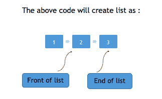
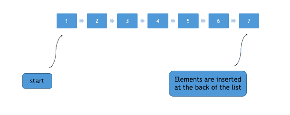
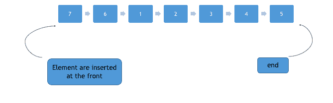

STL 中的列表容器
数组和向量是连续的容器，即它们将数据存储在连续的内存中，因此向量/数组中间的插入操作非常昂贵(就操作数量和处理时间而言)，因为我们必须移动所有元素，链表克服了这个问题。链表可以通过使用列表容器来实现。
使用列表模板创建新链接列表的语法为:
#include <iostream>
#include <list>
int main()
{
std::**list**<int> l;
}
/* Creates a new empty linked list l */
类似于向量和数组，列表也可以用参数初始化，
#include <iostream>
#include <list>
using namespace std;
int main()
{
std::**list**<int> l{1,2,3};
}
/* Creates a new linked list l */

以下是我们初始化列表的更多方法:
#include <iostream>
#include <list>
int main()
{
**list**<int> myList{1,2,3};
/* creates list with 1,2,3 in it */
**list**<int> myNewList = 1;
/* create list myNewList of integer
and copies value of 1 into it*/
}
列表容器的成员函数
insert功能
顾名思义，这个方法在列表中的特定位置插入一个元素。insert()有三种变体，如下所示:
insert(iterator, element):在列表中迭代器指向的位置之前插入元素。insert(iterator, count, element):在列表中迭代器指向的位置前插入元素，计数次。insert(iterator, start_iterator, end_iterator):在迭代器指向的位置之前，将 start_iterator 指向的元素插入 end_iterator 指向的元素
#include <iostream>
#include <list>
using namespace std;
int main()
{
**list**<int> l = {1,2,3,4,5};
**list**<int>::iterator it = l.begin();
l.**insert** (it+1, 100); // insert 100 before 2 position
/* now the list is 1 100 2 3 4 5 */
**list**<int> new_l = {10,20,30,40}; // new list
new_l.**insert** (new_l.**begin()**, l.**begin()**, l.**end()**);
/*
insert elements from beginning of list l to end of list l
before 1 position in list new_l */
/* now the list new_l is 1 100 2 3 4 5 10 20 30 40 */
l.**insert**(l.**begin()**, 5, 10); // insert 10 before beginning 5 times
/* now l is 10 10 10 10 10 1 100 2 3 4 5 */
return 0;
}
push_back和push_front功能
push_back(element)方法用于将元素从后面推入列表。

push_front(element)方法用于将元素从前面推入列表。

#include <iostream>
#include <list>
using namespace std;
int main()
{
**list**<int> l{1,2,3,4,5};
l.**push_back**(6);
l.**push_back**(7);
*/* now the list becomes 1,2,3,4,5,6,7 */*
l.**push_front**(8);
l.**push_front**(9);
*/* now the list becomes 9,8,1,2,3,4,5,6,7 */*
}
pop_back和pop_front功能
pop_front()从列表开始处移除第一个元素。而pop_back()从列表末尾移除第一个元素。
#include <iostream>
#include <list>
using namespace std;
int main()
{
**list**<int> l{1,2,3,4,5};
l.**pop_back()**();
*/* now the list becomes 1,2,3,4 */*
l.**pop_front()**();
*/* now the list becomes 2,3,4 */*
}
empty功能
如果列表为空，此方法返回 true，否则返回 false。
size功能
此方法可用于查找列表中存在的元质数量。
front and back功能
front()用于从开始获取列表的第一个元素，而back()用于从后面获取列表的第一个元素。
swap功能
交换两个列表，如果在交换任何元素时有异常抛出，swap()抛出异常。要交换的两个列表必须是相同的类型，即不能用字符串列表交换整数列表。
reverse功能
此方法可用于完全反转列表。
#include <iostream>
#include <list>
using namespace std;
int main()
{
**list**<int> l{1,2,3,4,5};
l.**reverse**();
*/* now the list becomes 5,4,3,2,1 */*
}
sort功能
sort()方法对给定列表进行排序。它不会创建新的排序列表，但会更改现有列表中元素的位置以对其进行排序。这种方法有两种变体:
sort():对列表中的元素进行升序排序，对于此功能，列表中的元素应该是数字。sort(compare_function):这种排序()是在我们不得不改变排序方式的时候使用的。它对非数字元素非常有帮助。我们可以定义如何在 compare _ funtion 中对列表元素进行排序。例如，字符串列表可以按字符串的长度排序，也可以按降序排序。
#include <iostream>
#include <list>
using namespace std;
bool compare_function( string& s1 , string& s2 )
{
return ( s1.length() > s2.length() );
}
int main()
{
**list**<int> list1 = {2,4,5,6,1,3};
**list**<string> list2 = {"h", "hhh", "hh"};
list1.**sort**();
*/* list1 is now 1 2 3 4 5 6 */*
list2.**sort**(compare_function);
*/* list2 is now h hh hhh */*
}
splice功能
splice()方法将元素从一个列表转移到另一个列表。拼接有三种版本:
splice(iterator, list_name):在迭代器指向的位置传送完整的列表列表名。splice(iterator, list_name, iterator_pos):将迭代器 _pos 指向的元素从列表 _ 名称转移到迭代器指向的位置。splice(iterator, list_name, itr_start, itr_end):从列表名称中迭代器指向的位置开始， itr_start 和 itr_end 指定的传送范围。
#include <iostream>
#include <list>
using namespace std;
int main ()
{
**list**<int> list1 = {1,2,3,4};
**list**<int> list2 = {5,6,7,8};
**list**<int>::iterator it;
it = list1.**begin**();
++it; *//pointing to second position*
list1.**splice**(it, list2);
*/* transfer all elements of list2 at position 2 in list1 */
/* now list1 is 1 5 6 7 8 2 3 4 and list2 is empty */*
list2.**splice**(list2.**begin**(), list1, it);
*/* transfer element pointed by it in list1 to the beginning of list2 */
/* list2 is now 5 and list1 is 1 6 7 8 2 3 4*/*
return 0;
}
merge功能
合并两个排序列表。必须首先对这两个列表进行排序。merge()合并两个列表，使得每个元素都被放置在结果列表中的适当位置。合并的语法是list1.merge(list2)。
作为参数传递的列表不会被删除，调用 merge()的列表将成为合并列表
#include <iostream>
#include <list>
using namespace std;
int main ()
{
**list**<int> list1 = {1,3,5,7,9};
**list**<int> list2 = {2,4,6,8,10};
*/* both the lists are sorted. In case they are not ,
first they should be sorted by sort function() */*
list1.**merge**(list2);
*/* list list1 is now 1,2,3,4,5,6,7,8,9,10 */*
cout << list1.**size**() << endl; *// prints 10*
}
词典式比较列表
由于列表是元素的集合，因此它们没有自己的标准值。因此，为了比较列表或向量，我们按照字典顺序比较它们的元素。
例如，让 list1 = { 1，2，3}和 list2 = { 1，3，2 }，现在，如果我们想检查 list1 是否大于 list2，我们只需按照列表中出现的顺序检查每个列表的元素。因为列表 1 中的 1 等于列表 2 中的 1，我们继续，现在列表 1 中的 2 比列表 2 中的 3 小，因此列表 2 在词典上大于列表 1。
运算符==、>、< 、<=、>=可用于按字典顺序比较列表。